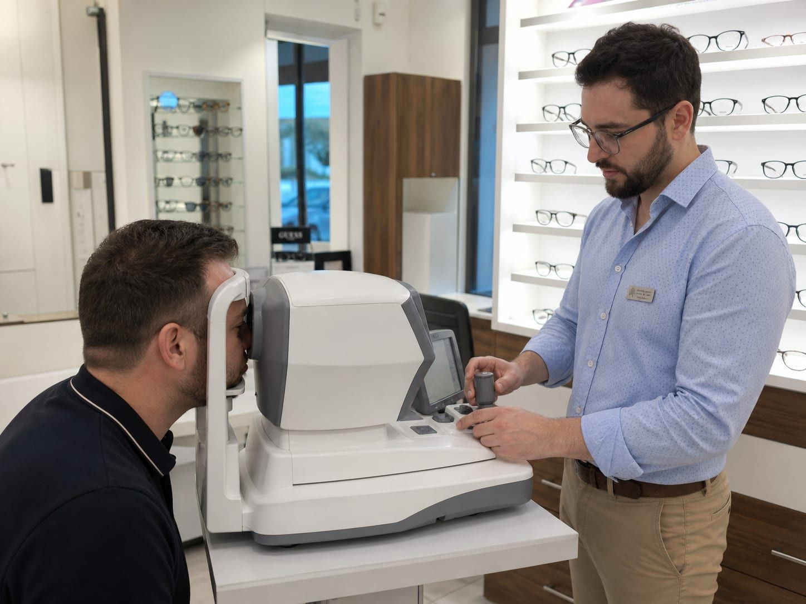
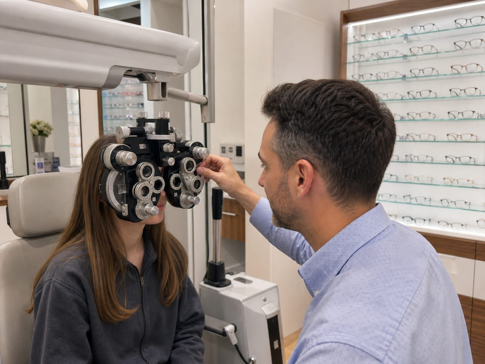

Látásvizsgálat
Szakértő optometristáink modern műszerekkel, alaposan és nyugodt tempóban mérik fel a látását.
A jó szemüveg alapja a pontos látásvizsgálat. Nálunk nem sietünk el semmit: végigbeszéljük, hogyan használja a szemét a mindennapokban – olvasás, képernyő, vezetés, sport –, és ehhez mérjük fel a látását.
A vizsgálat fájdalommentes és gyors, mégis alapos. A végén érthetően elmagyarázzuk az eredményt, és megbeszéljük, milyen megoldás illik leginkább Önhöz.
Hogyan zajlik a vizsgálat
Néhány nyugodt lépés, a végén tiszta képpel a látásáról.
Beszélgetés
Megkérdezzük, mihez használja a szemét, és van-e panasza, korábbi szemüvege.
Műszeres mérés
Modern eszközökkel megmérjük a szem dioptriaértékeit kiindulásként.
Finomhangolás
Próbalencsékkel pontosítjuk, hogy valóban a legélesebb képet kapja.
Eredmény és javaslat
Érthetően elmondjuk az eredményt, és megbeszéljük a lehetőségeket.

Kinek ajánljuk a rendszeres szűrést?
A látás észrevétlenül változik, ezért érdemes időről időre ellenőriztetni – akkor is, ha most még jól lát. Egy friss vizsgálat sok fejfájást és fáradt szemet megelőzhet.
- Ha régen készült az utolsó vizsgálata
- Ha sokat dolgozik képernyő előtt
- Ha fejfájást, fáradt szemet tapasztal
- Ha új szemüveget vagy kontaktlencsét szeretne
Gyakori kérdések
Amit a látásvizsgálatról tudni érdemes.
Meddig tart egy látásvizsgálat?
Kell előre időpontot foglalni?
Fáj vagy kellemetlen a vizsgálat?
Milyen gyakran érdemes ellenőriztetni a látásomat?
Gyermekem látását is megvizsgálják?


Foglaljon időpontot látásvizsgálatra
Pár kattintás a Clearvisio rendszerében, és érkezéskor már minden Önre vár.